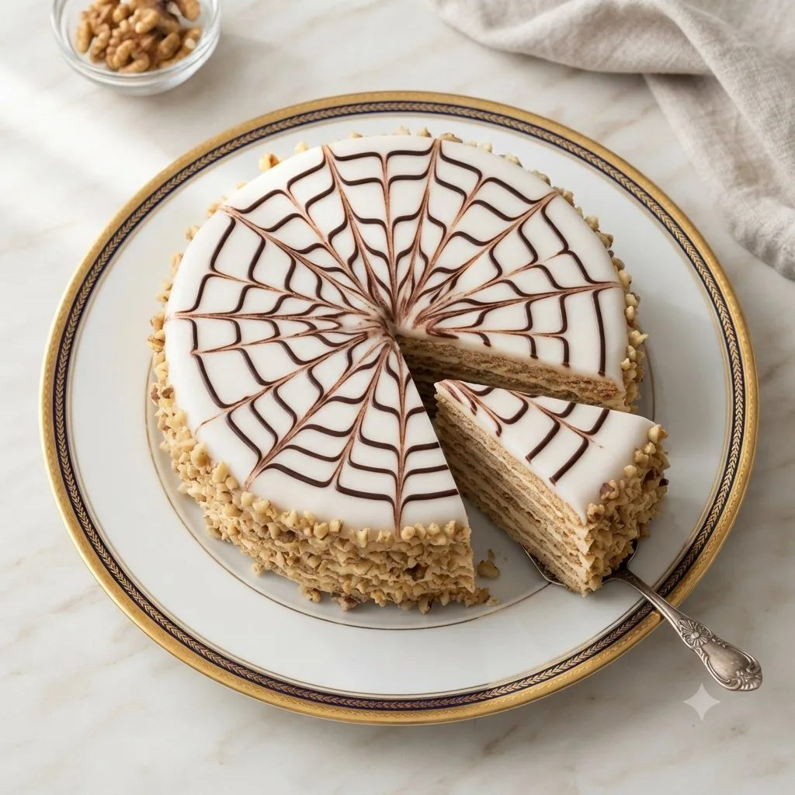

Paris-Brest
Pâtisserie en forme de roue de vélo, en pâte à choux, garnie de crème mousseline au praliné et surmontée d'amandes effilées.

Pâte à choux
- Beurre80 g
- Œuf entier250 g
- Eau0,25 l
- Farine130 g
- Amandes effilées40 g
Crème au beurre praliné
- Jaune d'œuf120 g
- Sucre250 g
- Eau0,085 l
- Beurre300 g
- Pâte praliné noisette180 g
Crème pâtissière (poudre à crème)
- Lait0,50 l
- Sucre125 g
- Poudre à crème45 g
- Vanille1/2 gousse
Crème mousseline légère
- Crème au beurre praliné300 g
- Crème pâtissière225 g
Étapes
- Confectionner la pâte à choux, contrôler la consistance.
- Coucher 3 couronnes de pâte l'une contre l'autre, dorer, saupoudrer d'amandes effilées.
- Cuire à four chaud (190°C) 30 minutes environ, laisser refroidir sur grille.
- Réaliser la crème pâtissière et la crème au beurre praliné, les mélanger à même température, émulsionner.
- Couper aux 2/3 de la hauteur, garnir à la poche cannelée, saupoudrer de sucre glace.
Vous produisez en volume ?
4Cake fournit les professionnels de la pâtisserie au Maroc : chocolat, fruits secs, décors et matériel, avec tarifs et conditionnements grossiste.
Voir les tarifs grossiste